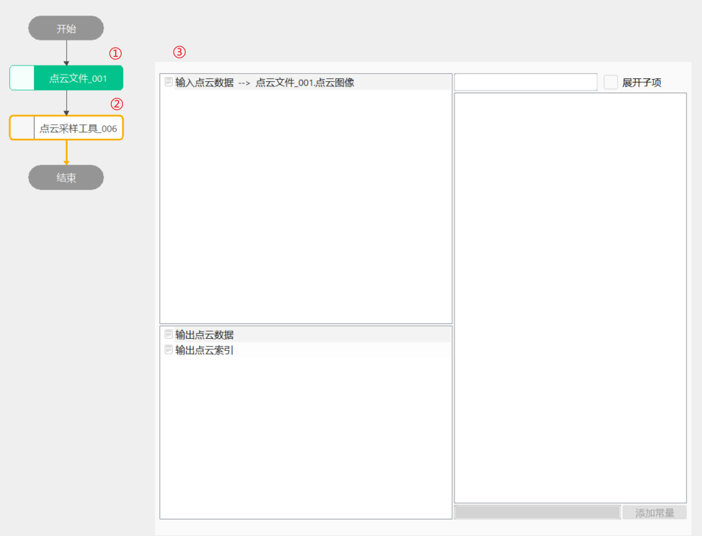
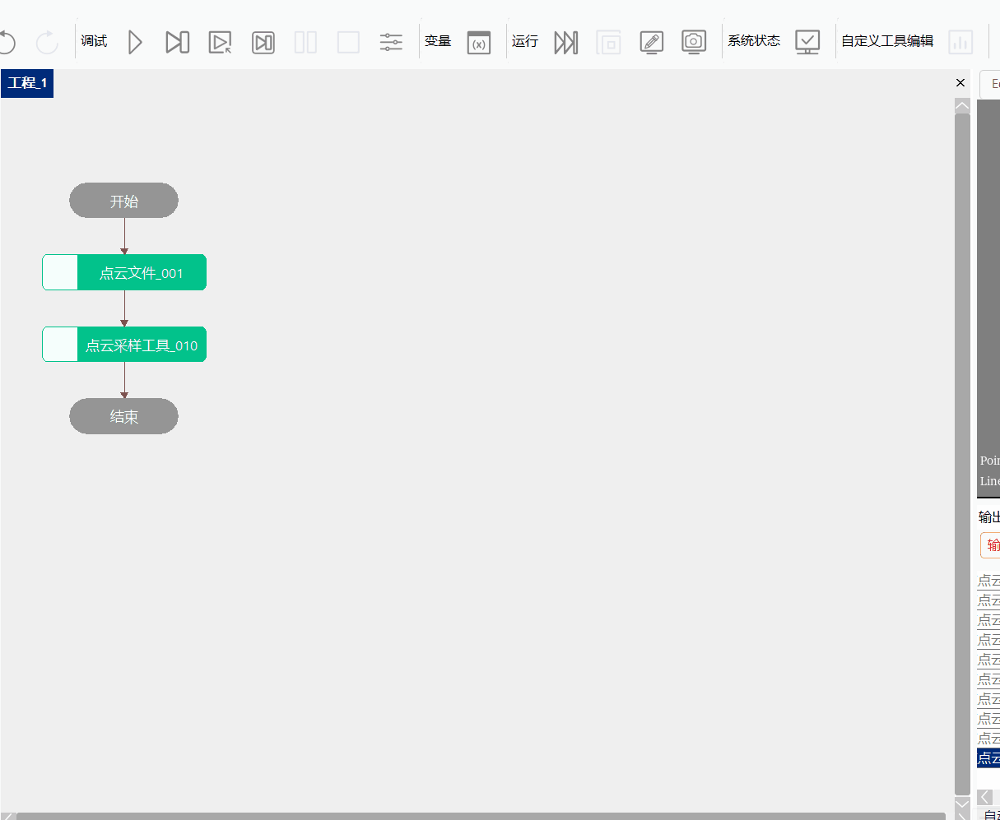
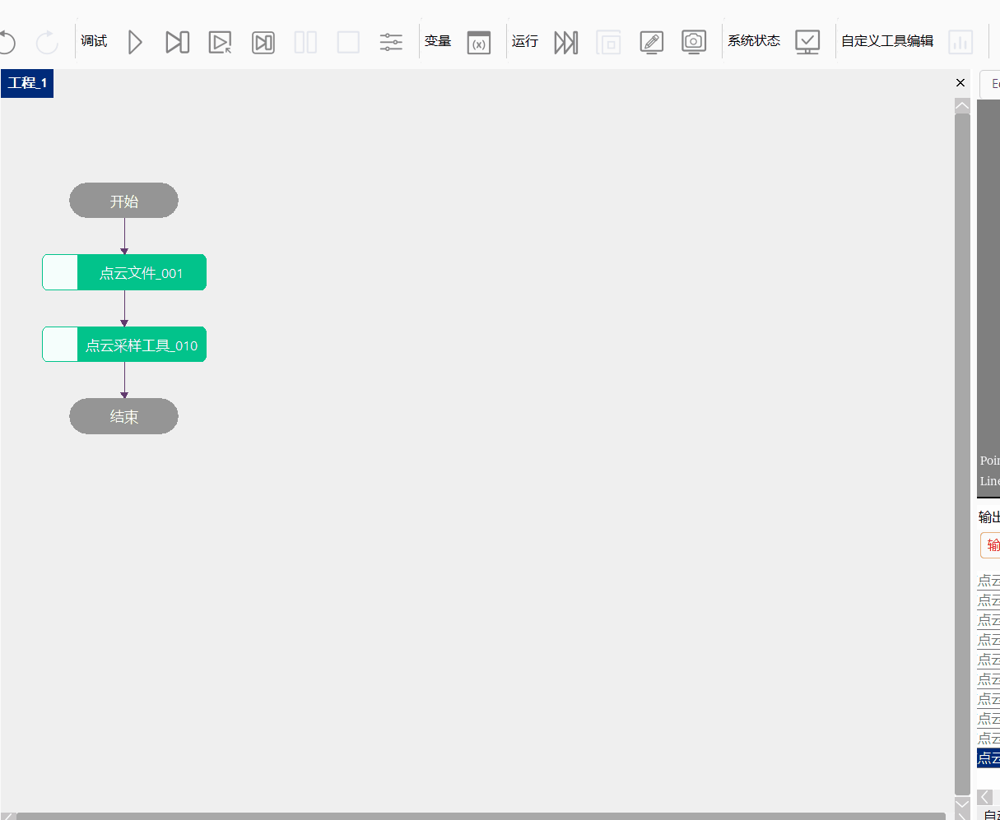
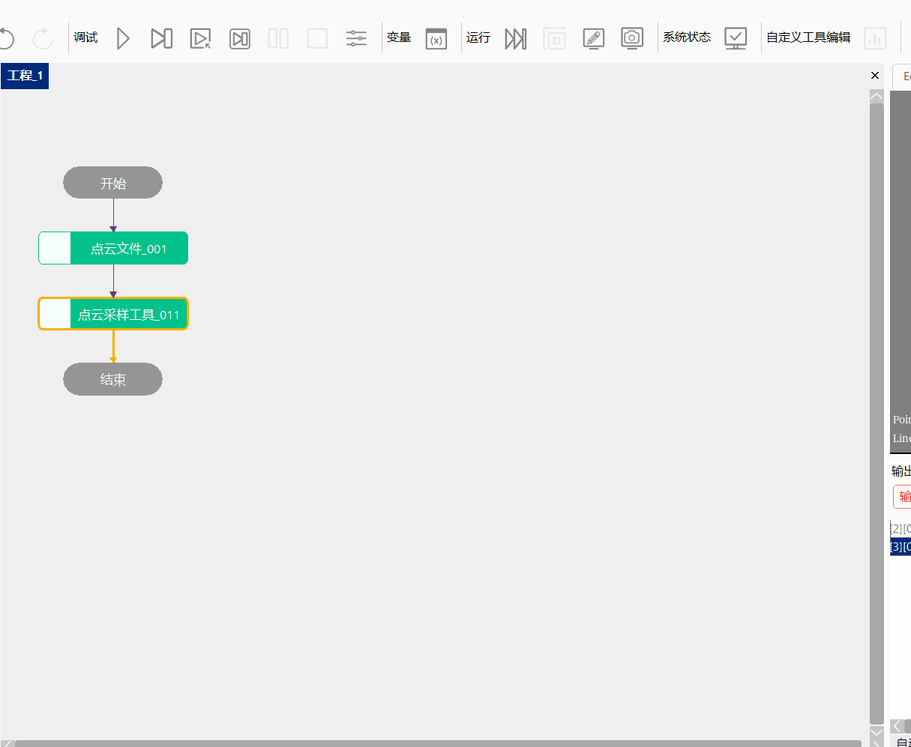

Công cụ lấy mẫu đám mây điểm chủ yếu phục vụ cho dự án đo lường đám mây điểm 3D, giải quyết vấn đề lượng dữ liệu đám mây điểm quá lớn cần giảm mẫu, công cụ chủ yếu được áp dụng trong giai đoạn tiền xử lý của dự án đo lường ba chiều.
Kịch bản ứng dụng điển hình như: khi lấy dữ liệu đám mây điểm, do lượng dữ liệu đám mây điểm quá lớn gây ảnh hưởng, thời gian xử lý khi thao tác trên đó quá dài, cần sử dụng công cụ lấy mẫu đám mây điểm, có thể thông qua phương thức lấy mẫu voxel, lấy mẫu ngẫu nhiên, lấy mẫu bước chỉ số cố định, lấy mẫu khoảng cách điểm không gian, giảm lượng dữ liệu đám mây điểm, hiệu quả rút ngắn thời gian xử lý.
Bước 1：Thêm tệp đám mây điểm, công cụ lấy mẫu đám mây điểm, và nhấp đúp mở chuỗi tham số công cụ, liên kết tệp đám mây điểm, như hình 3-1;
Bước 2：Nhấp chuột phải vào công cụ lấy mẫu đám mây điểm, chọn “Thuộc tính” để mở giao diện nâng cao của công cụ, như hình 3-2, chọn “Lấy mẫu voxel”, thiết lập tham số lấy mẫu, sau đó nhấp chạy để nhận được kết quả lấy mẫu;


Bước 1：Thêm tệp đám mây điểm, công cụ lấy mẫu đám mây điểm, và nhấp đúp mở chuỗi tham số công cụ, liên kết tệp đám mây điểm, như hình 3-1;
Bước 2：Nhấp chuột phải vào công cụ lấy mẫu đám mây điểm, chọn “Thuộc tính” để mở giao diện nâng cao của công cụ, như hình 3-3, loại lấy mẫu chọn “Giảm mẫu”, phương pháp lấy mẫu thiết lập “Lấy mẫu ngẫu nhiên”, thiết lập tham số lấy mẫu, sau đó nhấp chạy để nhận được kết quả lấy mẫu;

Bước 1：Thêm tệp đám mây điểm, công cụ lấy mẫu đám mây điểm, và nhấp đúp mở chuỗi tham số công cụ, liên kết tệp đám mây điểm, như hình 3-1;
Bước 2：Nhấp chuột phải vào công cụ lấy mẫu đám mây điểm, chọn “Thuộc tính” để mở giao diện nâng cao của công cụ, như hình 3-3, loại lấy mẫu chọn “Giảm mẫu”, phương pháp lấy mẫu thiết lập “Lấy mẫu bước chỉ số cố định”, thiết lập tham số lấy mẫu, sau đó nhấp chạy để nhận được kết quả lấy mẫu;

| Tên tham số | Mô tả tham số |
|---|---|
| Dữ liệu đám mây điểm đầu vào | Liên kết ảnh đám mây điểm bên ngoài |
| Tên tham số | Mô tả tham số |
|---|---|
| Loại lấy mẫu đám mây điểm | Chia thành lấy mẫu voxel và giảm mẫu |
| Voxel X、Y、Z | Chỉ định kích thước lưới voxel đơn lẻ, dùng để chia toàn bộ đám mây điểm thành voxel; phạm vi giá trị [0.001,1] |
| Số điểm tối thiểu trong một voxel | Chỉ định số điểm tối thiểu trong voxel hợp lệ, voxel có số điểm ít hơn ngưỡng này là voxel không hợp lệ, kết quả lấy mẫu sẽ loại bỏ điểm trong voxel không hợp lệ; phạm vi giá trị (0,500] |
| Loại điểm đặc trưng voxel | Chỉ định loại điểm đặc trưng của kết quả lọc voxel, bao gồm điểm trọng tâm voxel và điểm gần nhất với tâm voxel |
| Hướng cắt | Chỉ định hướng X/Y/Z/XYZ để cắt |
| Giới hạn trên dưới X/YZ | Phạm vi giá trị [-20000,20000] |
| Phương pháp lấy mẫu | Chỉ định phương pháp giảm mẫu, bao gồm lấy mẫu ngẫu nhiên, lấy mẫu bước chỉ số cố định, lấy mẫu khoảng cách điểm không gian |
| Loại dữ liệu đầu ra | Bao gồm chỉ số và điểm dữ liệu |
| Khoảng cách điểm không gian | Chỉ định khoảng cách giữa các điểm sau khi giảm mẫu, chỉ hiệu quả với lấy mẫu khoảng cách điểm không gian; phạm vi giá trị [0.001,5] |
| Bật tính toán song song | Có bật tính toán song song hay không, khi chọn Có, thuật toán sẽ bật chế độ tính toán song song OpenMp, có thể nâng cao tốc độ tính toán, nhưng có thể xuất hiện tình huống thời gian tiêu hao không ổn định, khi chọn Không, thuật toán sẽ tắt tính toán song song OpenMp. |
| Tỷ lệ số luồng | Thiết lập tỷ lệ phần trăm số luồng cho tính toán song song, phạm vi hiệu quả (0, 0.75], tương ứng với phạm vi phần trăm (0%, 75%]. |
Tham số giao diện nâng cao giống với tham số cửa sổ thuộc tính.
| Dữ liệu đám mây điểm đầu ra | Bao gồm số điểm trong đám mây điểm; |
|---|---|
| Dữ liệu đám mây điểm đầu ra | Dữ liệu đám mây điểm cung cấp cho bên ngoài sử dụng |
| Tên tham số | Mô tả tham số |
|---|---|
| Dữ liệu đám mây điểm đầu ra | Bao gồm số điểm trong đám mây điểm |
| Kết quả thực thi | Kết quả thực thi công cụ |
| Thời gian thực thi | Thời gian thực thi công cụ |
Xem “\Samples\3D\点云\点云测量.gvp”。
Công cụ lấy mẫu đám mây điểm：Công cụ lấy mẫu đám mây điểm chủ yếu bao gồm các chức năng voxel/đồng đều/chỉ số/khoảng cách điểm không gian/ngẫu nhiên
Nguyên lý lấy mẫu voxel：Trước tiên chia lưới voxel cho đám mây điểm đầu vào, sau đó xử lý điểm chồng chéo trong voxel, chọn điểm trọng tâm của lưới voxel
Nguyên lý lấy mẫu ngẫu nhiên：Thực hiện chọn điểm ngẫu nhiên giảm mẫu trên đám mây điểm đầu vào
Nguyên lý lấy mẫu chỉ số：Dựa theo bước chỉ số được chỉ định để giảm mẫu trên đám mây điểm đầu vào
Nguyên lý lấy mẫu khoảng cách điểm không gian：Dựa theo khoảng cách điểm không gian của từng điểm sau khi lấy mẫu được chỉ định để giảm mẫu trên đám mây điểm đầu vào